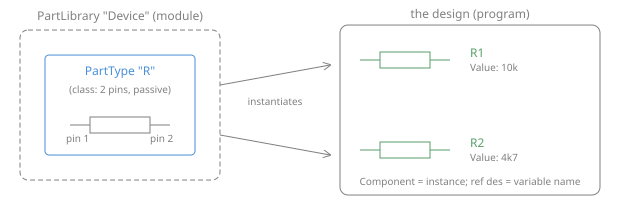
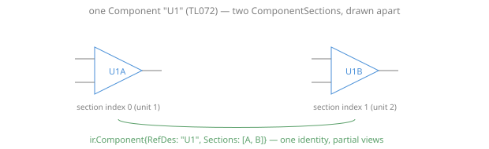
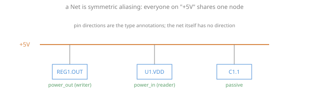
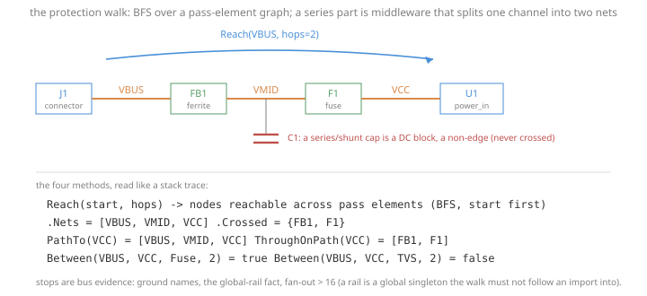
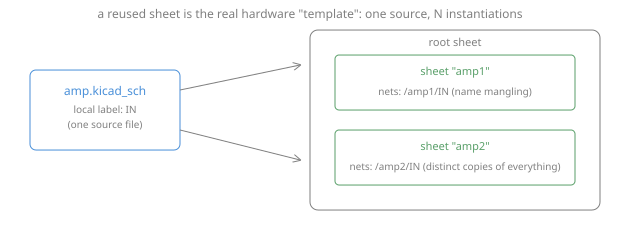
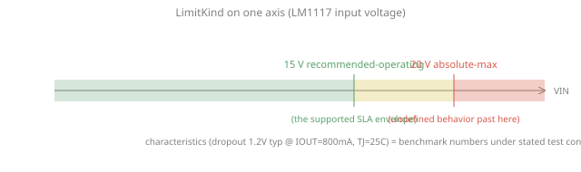
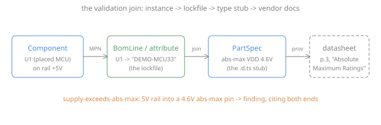
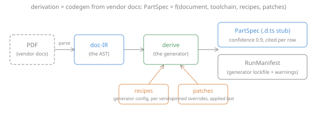
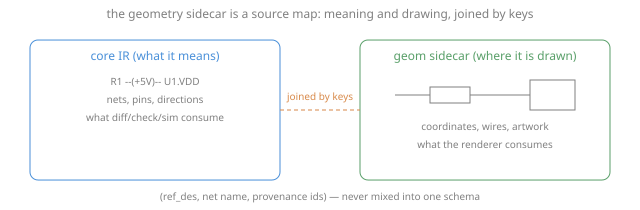

The software analogy (a map for engineers coming from code)¶
A design is a program. The symbol library is its imports. The BOM is its lockfile. Datasheets are vendor documentation, and the parameter layer is us turning those docs into type definitions a linter can check. This page expands that mapping one concept at a time, with what each thing means in an actual circuit and where it lives in the schemas. It complements the numbered docs (13-23); read those for the design rationale, this for orientation.
The master table:
| Hardware / our schema | Software analogy |
|---|---|
PartLibrary |
a package/module you import |
PartType |
a class declaration: members (pins) and their types (directions) |
Component |
an instance; the ref des is the variable name |
ComponentSection |
partial views of one instance |
Net |
a shared channel aliasing fields of many instances |
| Net solving | name resolution + linking |
Protection walk (Reach) |
graph reachability across middleware that splits a channel |
| Reused hierarchical sheet | a module instantiated N times, with name mangling |
| MPN | an exact pinned artifact (lodash@4.17.21) |
BomLine |
the lockfile |
| Datasheet | vendor prose documentation for a closed-source dependency |
PartSpec |
the hand- or machine-written .d.ts type stub for that dependency |
LimitKind |
UB boundary / SLA envelope / benchmark numbers |
| The validation join | type-checking call sites against dependency stubs via the lockfile |
| doc-IR | the parsed AST of the vendor docs |
| derive, recipes, patches, manifests | the codegen tool, its config, pinned overrides, and its lockfile |
| Geometry sidecar | source maps |
| Provenance | blame / debug symbols |
Modules and classes: PartLibrary and PartType¶
Software. import Device brings in a package; Device.R is a class it declares:
two members (pins 1 and 2), each typed passive. The class says nothing about any
particular resistor in your program, and nothing about which physical artifact will
eventually satisfy it.
Circuit. The schematic's symbol library. A KiCad lib_symbols entry or an EDIF
cell: the drawn body, the pin list, each pin's electrical type (input, output,
power_in...), and the designator prefix ("R" for resistors). Every resistor you place
comes from this one definition.
Schema. ir.PartLibrary holding ir.PartTypes; pins are ir.Pin with an
ir.PinDirection. Readers fill these from the design file itself (v6+ KiCad files
embed their libraries, like vendoring your dependencies).

Instances: Component¶
Software. r1 := Device.R(value: "10k"). The variable name is the reference
designator; constructor arguments and fields are the instance attributes (Value,
MPN/Manufacturer). Twenty resistors are twenty instances of
one class.
Circuit. A placed part: R1 near the connector, R2 in the feedback path. Identity is the ref des, not the position; the same R1 exists in the schematic, the layout, and the BOM.
Schema. ir.Component with RefDes, Attributes, and Sections referencing the
PartType by name. The checks quantify over Components, the way an analyzer walks
call sites, not declarations.
Partial views: ComponentSection¶
Software. One object whose interface is used at several distinct sites: think of destructuring a struct's fields across two files, or a partial class. There is still exactly one identity.
Circuit. A dual op-amp: one physical TL072 drawn as two triangles, U1A on this half of the sheet and U1B on that one. One package on the board, one BOM line, two drawn units.
Schema. One ir.Component ("U1") with two ComponentSections (unit indexes 0
and 1). A repeated unit index is a genuine bug and trips the duplicate-ref-des
diagnostics; distinct units never do.

Aliasing: Net¶
Software. Not a function call: a net is a shared channel, or many variables aliasing one memory cell. Everything attached to "+5V" IS the same electrical node; there is no caller and no callee, no direction on the edge itself.
Circuit. The +5V rail: the regulator's output pin, the MCU's VDD pin, and a
decoupling cap all tied together. Directionality lives on the pins (the regulator's
pin is power_out, the MCU's is power_in): those are the type annotations the
connectivity rules dispatch on, and why a missing direction means "skip, never guess."
Schema. ir.Net with Connections (component ref + pin ref). Pin directions come
from the PartType.

Name resolution: net solving¶
Software. Compilation's front half: the source (wires, labels, junctions, geometry) contains only implicit references, and the solver builds the symbol table: which tokens denote the same thing. Two labels "+5V" on different wires are two mentions of one symbol; the solver unifies them, exactly like a linker unifying external symbols by name.
Circuit. KiCad stores no netlist: connectivity IS the drawing. A wire endpoint on
a pin's connect point binds; a label names the node; same-named power symbols merge
across the sheet. Getting these binding rules right is a language-semantics problem,
which is why they are pinned against the reference implementation (kicad-cli), the
way a compiler pins against a conformance suite. Details: docs/22.
The protection walk: Reach¶
Software. Some questions are not about one node but about a path: "is there an
auth middleware anywhere between the public handler and the database call?" Neither
endpoint can answer it; you walk the call graph between them. Reach is that walk. A
two-terminal series part (a resistor, inductor, ferrite bead, or fuse) is inline
middleware: it splits one logical channel into two named nets, so a per-net rule is
blind across it. Reach(start, hops) is a bounded BFS over the pass-element adjacency,
and the helpers read the result like a stack trace. PathTo is the path,
ThroughOnPath is the middleware crossed in order, and Between(from, to, class, hops)
is the one-line "does any X sit on the path" query.
Two edges of the model carry the electrical meaning. A series capacitor is a DC
block, an insulator between two plates, so it is a non-edge and the walk never crosses
it (a decoupling cap to ground is a different role entirely). And a rail is a global
singleton: ground, the design-wide global fact, or any net with bus-scale fan-out
(more than 16 pins) is a stop, because following a pull-up onto VCC would make the
whole design reachable. That is the graph equivalent of chasing an import into a
global and treating everything it touches as local.
Circuit. Protection and presence rules are reachability questions: a fuse sits somewhere between the connector and the regulator, an ESD clamp hangs off a net on the power-entry path. The series element that splits the net is exactly what a per-net check cannot see past, which is why the walk exists.
Schema. check.Model.Reach/Between over the netlist IR; the crossable
classes are resistor/inductor/ferrite/fuse; the stops are ground/global/high-fan-out.
The rules that use it carry their own worked diagrams: what the walk crosses and where
it stops and the fires/passes
cases.
{kind=link}
{kind=link}

Templates: the reused sheet¶
Software. Real templates (C++/generics) specialize at compile time: each
instantiation is a new type. The hardware analog is NOT the parameterized part; a
Device:R with Value: 10k is just a constructor argument, no specialization
happens. The true template is the reused hierarchical sheet: one amp.kicad_sch
source, instantiated twice, producing two complete copies of everything inside, with
per-instance qualified names (/amp1/IN, /amp2/IN), which is name mangling,
letter for letter.
Circuit. A stereo preamp drawn once and instantiated per channel; a motor driver repeated four times. Each instance has its own components (the walk resolves per-instance reference designators) and its own local nets.
Schema. ir.Sheet references plus the multi-sheet hierarchy walk;
qualified net names follow KiCad's own convention so they match board-file names.

The lockfile: MPN and BomLine¶
Software. Your code says import leftpad; the lockfile says
leftpad@1.3.0, sha512-.... The MPN is that exact pinned artifact: "BSS138" is not
"some N-FET"; it is one orderable product with one datasheet. BomLine (or the MPN
attribute on a component) is the lockfile entry binding your variable to it.
Circuit. The BOM: R1 will be built as Yageo RC0603FR-0710KL. Two designs can place identical schematics and ship different physical parts; only the BOM knows. This is also the moment of real specialization (see Templates): choosing the MPN is link-time binding of the abstract symbol to a concrete implementation.
Schema. ir.BomLine{ref_des, mpn, manufacturer}; the KiCad reader carries MPN
and Manufacturer symbol properties into component attributes as the no-BOM
fallback. The join is case-insensitive on MPN and nothing fuzzier: a near-miss MPN is
a different part until a human says otherwise.
Vendor docs as type stubs: PartSpec¶
Software. The dependency is closed-source (you will never see the die), and the
vendor publishes prose documentation. A PartSpec is the .d.ts stub someone wrote
for it: machine-readable claims about the artifact's limits and behavior, written
against one pinned doc revision (SourceDoc), with every claim linking back to the
prose it came from (page, table, extraction method, confidence). Like DefinitelyTyped,
stubs start hand-written (our fixtures) and graduate to generated (derive), and a
stub nobody stands behind is worse than no stub.
Circuit. "Absolute-maximum VDD is 4.6 V (page 3, Absolute Maximum Ratings, TA = 25 °C)." A parameter is never a bare scalar: it is a min/typ/max range valid under stated test conditions, at a stated limit kind.
Schema. param.PartSpec / Parameter / Condition / ParamProvenance
(docs/20). The honesty predicates are part of the contract:
UnderSpecified (conditions not trustworthy: skip) and MachineComparable (a
text-only condition means "show a human, never auto-compare").
Limits as contract tiers: LimitKind¶
Software. - Absolute-max = the undefined-behavior boundary. Past it, the vendor promises nothing: like indexing past the end of an array, damage may be immediate or latent. - Recommended-operating = the supported envelope. The SLA: inside it, the product behaves as documented. - Characteristic = published benchmark numbers. Measured behavior under a stated config, and like any benchmark, the number is meaningless without the config (the test conditions).
Circuit. LM1117: operate VIN up to 15 V (recommended), never exceed 20 V (absolute max), expect ~1.2 V dropout at 800 mA and 25 °C (characteristic).

The type checker: the validation join¶
Software. With stubs (PartSpecs), a lockfile (BOM/MPN), and call sites (Components), checking is linting: resolve each call site through the lockfile to its stub and verify usage against the declared types. No stub for a dependency? Skip, never pass silently; an untyped import is not a proven-correct import.
Circuit. supply-exceeds-abs-max: a power-input pin on a rail whose name says
"+5V", joined to a part whose stub says absolute-max supply is 4.6 V, is a finding
that cites both ends, the schematic location and the datasheet page.
Schema. The check Model's params tier (check.NewModelWithParams,
Model.PartSpec), the supply-symbol alias map (vendor spellings live in the model
layer, never in rule text), and the rule itself. Silence is structural: an empty
param.ParamSet yields no findings by construction.

Codegen: doc-IR and derive¶
Software. Generating stubs from vendor docs is a compiler pipeline: - doc-IR is the parsed AST of the documentation, tables, cells, figures, text, with positions (docs/21). N parsers produce it; nothing downstream re-reads the PDF. - derive is the generator: deterministic, versioned, reproducible (docs/24). - recipes are the generator's per-vendor config ("in TI sheets, this heading means absolute-max"), data in git, reviewed like code. - patches are pinned human overrides that survive regeneration, the fix you commit so the generator's known mistake on one exact input can never come back. - the RunManifest is the generator's lockfile plus its warnings: inputs pinned, and every gap (what it saw and did not extract) enumerated, because silence must never read as coverage.
Circuit. A real run: docling parsed the BSS138 sheet, derive emitted 30 parameters with page citations; on the LM1117 sheet the parser mis-placed one value into the wrong column and a two-patch pair (clear + insert) corrects it permanently.

Source maps and blame: geometry and provenance¶
Software. The geometry sidecar is a source map: the same program, mapped to where things are drawn, kept out of the semantic schema and joined by keys, the renderer consumes it, the analyzers never do. Provenance is blame and debug symbols: every IR node, finding, and extracted parameter can answer "which file/line (or page/table) did you come from," which is what makes findings verifiable rather than asserted.
Circuit. Click a finding, land on the exact wire in the schematic; click a datasheet-backed limit, land on the exact table in the PDF.
Schema. geom.SchematicGeometry joined by ref_des/net/provenance keys
(docs/16); ir.Provenance and
param.ParamProvenance.

Where the analogy breaks (on purpose)¶
- No dynamic dispatch, no open world. Every connection is resolved at design time; the whole program is one closed compilation unit. That is why exhaustive static checking works at all, and why "the design" can be diffed as a value.
- Nets are symmetric. There is no caller: electrically everyone on the net "calls" everyone. Direction is a property of pins, not edges, so pin directions do the type-annotation work and their absence means skip.
- Runtime is physics. There is no sandbox: "running the program" is powering a board, so the linting tier (checks against stubs) carries weight software linters do not, the cheap static end of a ramp whose expensive end is simulation.
- Instances are atoms. Two "identical" resistors are still two physical objects with tolerances; the stub describes a population, not your unit. That is what tolerance analysis exists to reason about, and why characteristics carry min/typ/max rather than one number.